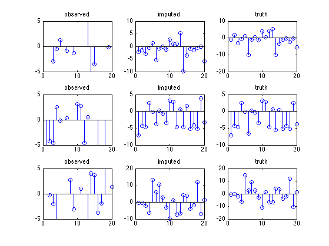

Gauss Imputation Demo
PMTKneedsStatsToolbox regstats
Contents
% This file is from pmtk3.googlecode.com function gaussImputationDemoEM()
requireStatsToolbox
Make data
setSeed(1); d = 20; n = 100; pcMissing = 0.5; mu = randn(d,1); Sigma = randpd(d); trueModel = struct('mu', mu, 'Sigma', Sigma); Xfull = gaussSample(trueModel, n); missing = rand(n,d) < pcMissing; Xmiss = Xfull; Xmiss(missing) = NaN;
Impute
[model, LLtrace] = gaussMissingFitEm(Xmiss, 'verbose', false); if 0 S = [Sigma zeros(d,2) model.Sigma]; figure;imagesc(S); colorbar title('Sigma: truth on left, estimate on right') printPmtkFigure('mvnImputeSigma'); M = [mu(:)'; zeros(1,d); model.mu(:)']; figure;imagesc(M); colorbar title('mu: truth on top, estimate on bottom') figure; plot(LLtrace(1:3:end), 'o-', 'linewidth', 3); title('log likelihood vs iteration') printPmtkFigure('mvnImputeEMtrace'); end [XimputeEM] = gaussImpute(model, Xmiss); [XimputeOracle] = gaussImpute(trueModel, Xmiss);
Plotting
Xmiss0 = Xmiss; Xmiss0(isnan(Xmiss0))=0; figure; nr = 3; nc = 3; for i=1:nr subplot2(nr,nc,i,1); vis = find(~isnan(Xmiss(i,:))); stem(vis, Xmiss(i,vis)); title('observed'); set(gca, 'ylim', [-5 5]); subplot2(nr,nc,i,2); stem(XimputeOracle(i,:)); title('imputed'); subplot2(nr,nc,i,3); stem(Xfull(i, :)); title('truth') end if 0 ndx = 1:8; % just plot first 20 rows figure; hintonDiagram(Xmiss0(ndx,:)); title('observed data'); printPmtkFigure('mvnImputeObs'); figure; hintonDiagram(XimputeEM(ndx,:)); title('imputation with em'); printPmtkFigure('mvnImputeEM'); figure; hintonDiagram(XimputeOracle(ndx,:)); title('imputation with true params'); printPmtkFigure('mvnImputeOracle') figure; hintonDiagram(Xfull(ndx,:)); title('truth'); printPmtkFigure('mvnImputeTruth'); end if 0 % Scatter plots doPlot(Xmiss, Xfull, XimputeOracle, 'imputation with true params', 'mvnImputeScatterOracle') doPlot(Xmiss, Xfull, XimputeEM, 'imputation with em', 'mvnImputeScatterEm') end
end function doPlot(Xmiss, Xfull, Ximpute, ttl, fname) figure; nr = 2; nc = 2; for j=1:(nr*nc) subplot(nr, nc, j); miss = find(isnan(Xmiss(:,j))); scatter(Xfull(miss, j), Ximpute(miss,j)) xlabel('truth'); ylabel('imputed'); mini = min(Xfull(:,j)); maxi = max(Xfull(:,j)); line([mini maxi], [mini maxi]); axis square grid on stats = regstats(Xfull(miss,j), Ximpute(miss,j)); r = stats.rsquare; title(sprintf('R^2 = %5.3f', r)) end suptitle(ttl) printPmtkFigure(fname); end